What do conditions do
Enabling conditions
Filter conditions
Validation conditions
Syntax
Variables
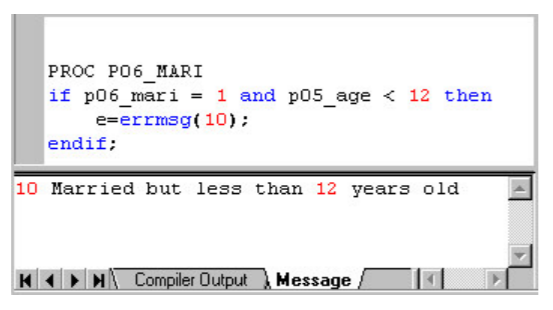
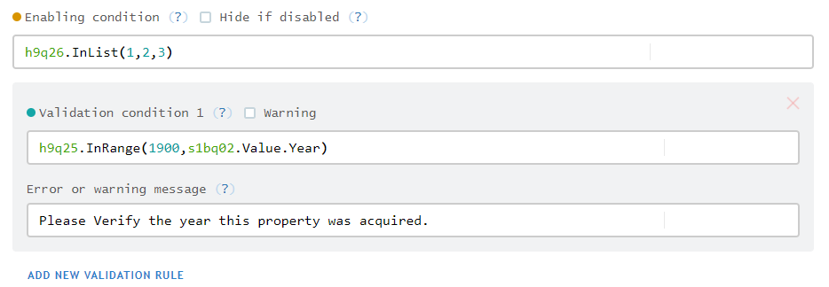
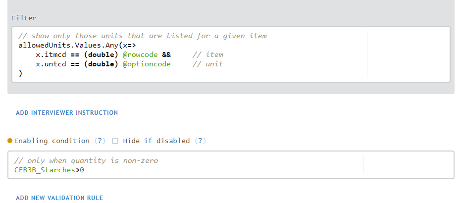
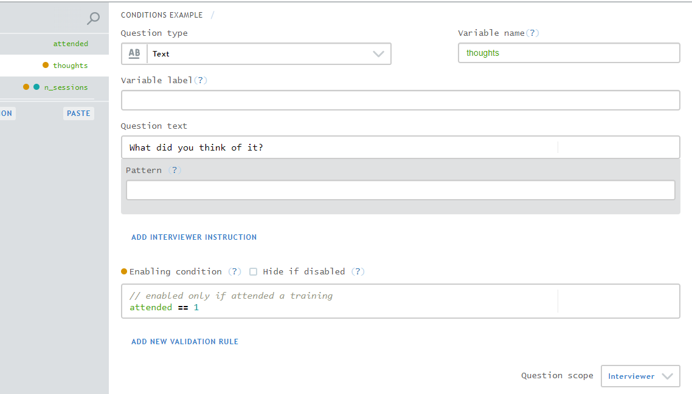
// if the maximum answer value is answered...
IsAnswered(max_answer_value) ?
// ... then limit the options to those whose value is less than or equal to it
@optioncode <= max_answer_value :
// otherwise, show all options
true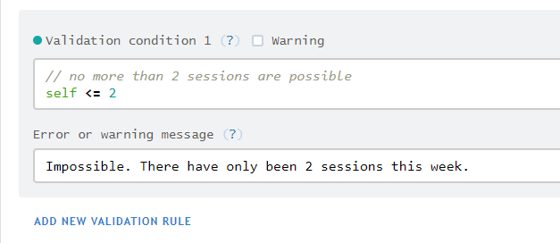
assert in Stata.assert in Stata.reenter. But other mechanisms for dealing with invalid answers.
/*
Pattern: object.Method(args)
Note: methods:
- are case-sensitive
- belong to question (data) types
*/
// whether a single-select value lies in a range
single_select.InRange(1, 5)
// whether option 2 was one of the values selected
checkbox.Contains(2)
/* invalid methods and their equivalents */
// wrong: single_select.Contains(2)
// right: single_select == 1
// wrong: checkbox.InRange(1, 5)
// right: checkbox.ContainsAny(1, 2, 3, 4, 5)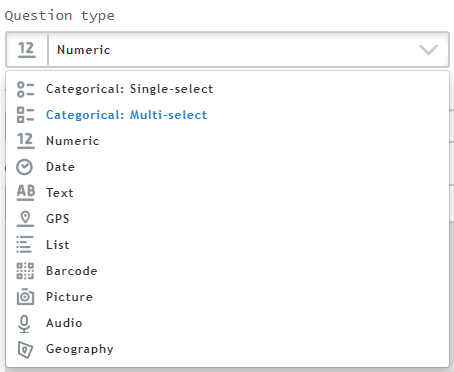
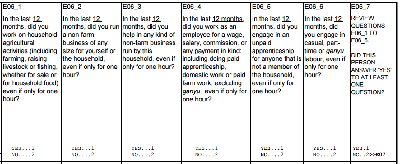
/* enable the questions after E06_6 if there is at least 1 "yes" answer */
// count the number of "yes" answers, and verify that it is greater than 0
CountValue(1,hh_e06_1,hh_e06_2,hh_e06_3,hh_e06_4,hh_e06_5,hh_e06_6) > 0NOTE: This expression might be best used to determine the value of a variable. So let’s talk about variables (!= questions)…
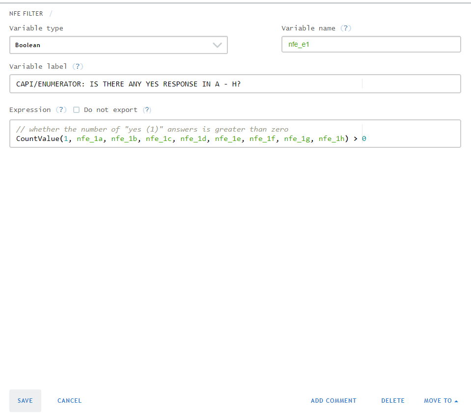
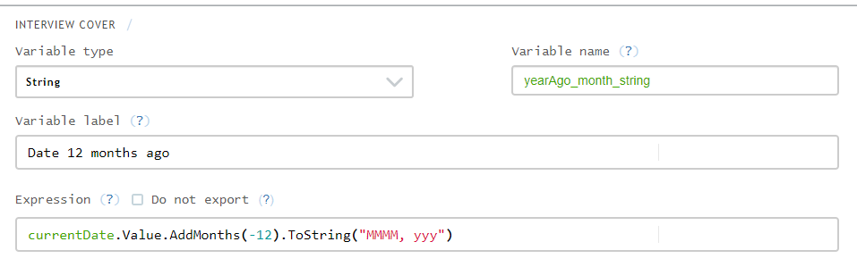
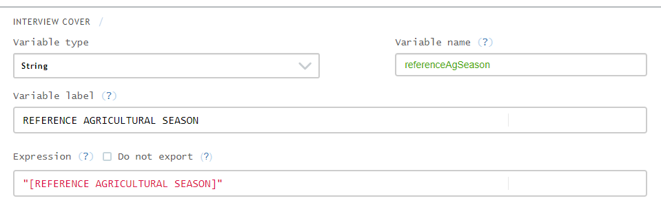
ENUMERATOR: CHECK...)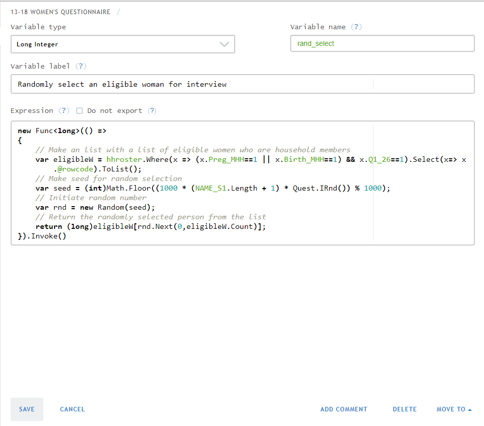
ENUMERATOR: CHECK...)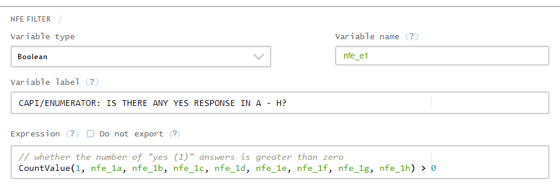
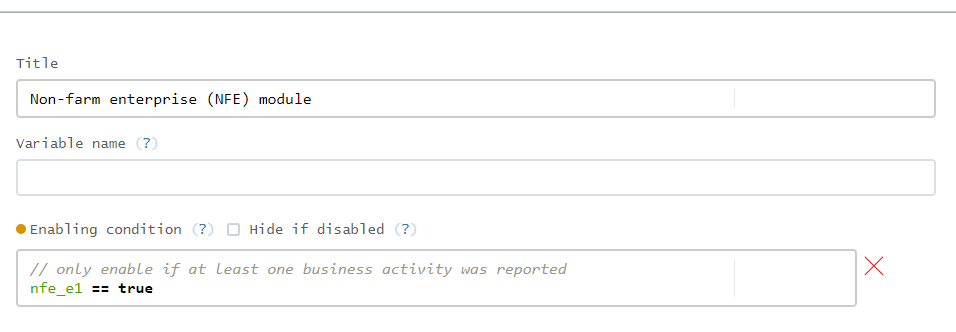
ENUMERATOR: CHECK...)ADD VARIABLE button orAdd variable after
Comments
Inline
Block
Both